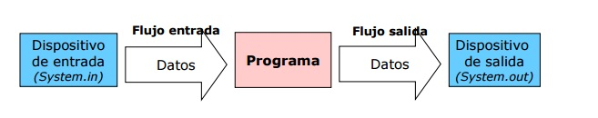

Un programa en Java, que necesita realizar una operación de entrada/salida (en adelante E/S), lo hace a través de un flujo o stream.
Un flujo es una abstracción de todo aquello que produce o consume información.
La vinculación de este flujo al dispositivo físico la hace el sistema de entrada y salida de Java.

Las clases y métodos de E/S que necesitamos emplear son las mismas independientemente del dispositivo con el que estemos actuando. Luego, el núcleo de Java sabrá si tiene que tratar con el teclado, el monitor, un sistema de archivos o un socket de red; liberando al programador de tener que saber con quién está interactuando.
Java define dos tipos de flujos en el paquete java.io:
- Byte streams (8 bits): proporciona lo necesario para la gestión de entradas y salidas de bytes y su uso está orientado a la lectura y escritura de datos binarios. El tratamiento del flujo de bytes viene determinado por dos clases abstractas que son InputStream y OutputStream Estas dos clases definen los métodos que sus subclases tendrán implementados y, de entre todos, destacan read() y write() que leen y escriben bytes de datos respectivamente.
- Character streams (16 bits): de manera similar a los flujos de bytes, los flujos de caracteres están determinados por dos clases abstractas, en este caso: Reader y Writer. Dichas clases manejan flujos de caracteres Unicode. Y también de ellas derivan subclases concretas que implementan los métodos definidos en ellas siendo los más destacados los métodos read() y write() que leen y escriben caracteres de datos respectivamente.